Nuts & Seeds

Crunchy, nutrient-dense almonds packed with plant protein, healthy fats, and Vitamin E. Ideal for daily snacking, baking, or blending into creamy almond milk.

Creamy, buttery whole cashews rich in heart-healthy fats, magnesium, and iron. Great for daily snacking, cooking, or blending into rich dairy-free sauces.
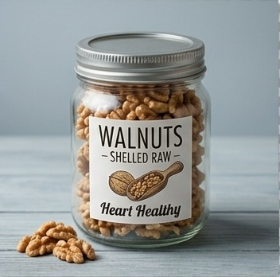
Crisp, earthy walnut halves loaded with plant-based Omega-3s and antioxidants for brain and heart health. Ideal for baking, salads, or morning oats.
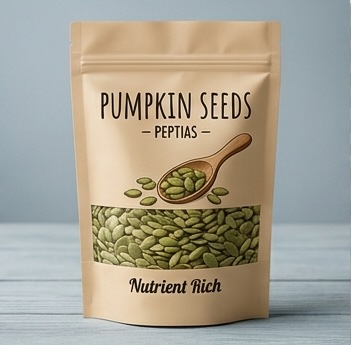
Crunchy, mineral-rich green pepitas packed with plant protein, zinc, and magnesium. Perfect for roasting, sprinkling over salads, or snacking on the go.
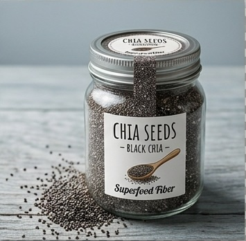
Tiny, nutrient-dense superfood seeds packed with soluble fiber, Omega-3s, and protein. Absorbs liquid to create creamy puddings, thick smoothies, or egg substitutes.
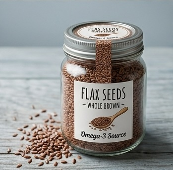
Golden-brown, nutty seeds loaded with Omega-3 fatty acids, lignans, and dietary fiber. Best ground into smoothies, yogurt, or baked goods for optimal digestion.
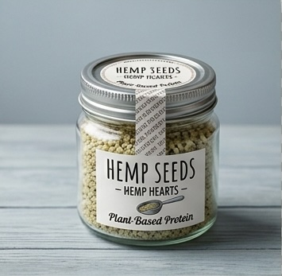
Soft, mildly nutty hemp hearts offering complete plant protein and an ideal balance of Omega-3 and Omega-6 fats. Ready to sprinkle direclty over bowls, salads and toast.
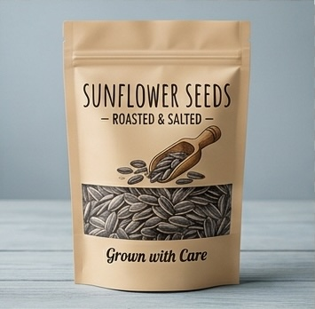
Mild, nutty kernels high in Vitamin E, selenium, and healthy fats. A versatile crunch for trail mixes, breads, salads, and everyday snacking.

Light, crisp roasted or raw kernels rich in protein, iron, and B vitamins. A traditional, nutrient-dense crunch for snacking, granolas, and savory dishes.
Traditional Sweets
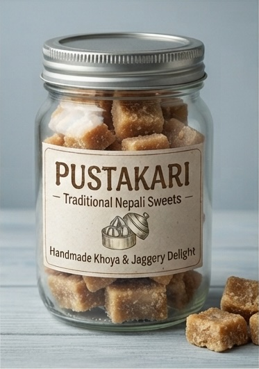
Traditional Nepali caramelized fudge slow-cooked from khoya (mild solids), ghee, jaggery, and aromatic spices, topped with crunchy nuts and seeds. A rich, nostalgic treat packed with natural energy.
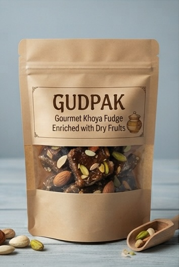
Classic Newari sweet confection crafted from reduced milk solids, ghee, molasses, and warming spices, generously studded with almonds, cashews, and dried fruits. Rich, dense, and deeply nourishing.
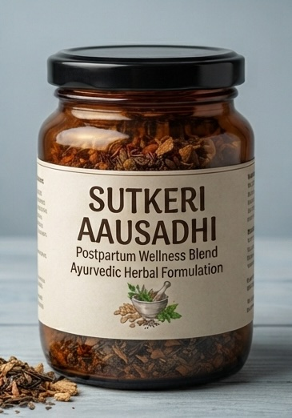
Traditional Nepali herbal-nutritional tonic made from slow-roasted nuts, seeds, dried fruits, ghee, and medicinal herbs like battisa (32 Spices). Specially formulated to support postpartum recovery, lactation, and physical strength.
Grains
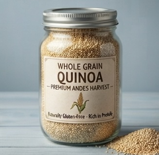
Fluffy, gluten-free ancient seeds rich in complete plant protein, fiber, and iron. Cooks in just 15 minutes for a light, nutty base in bowls, salads, and side dishes.
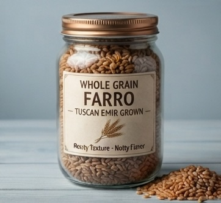
Hearty, chewy ancient wheat grain with a rich, nutty flavor and high fiber and protein content. Holds its shape well in warm grain bowls, soups, and roasted vegetable salads.
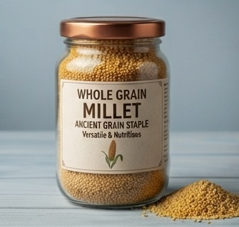
Mild, lightly sweet gluten-free grain packed with magnesium, fiber, and slow-release energy. Versatile enough to fluff like couscous or simmer into a warm, creamy porridge.
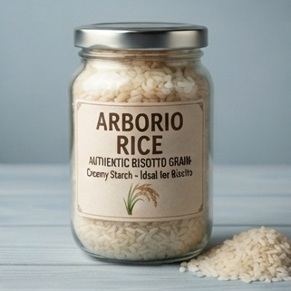
Plump Italian short-grain rice high in amylopectin starch for an ultra-creamy, velvety texture. The essential choice for authentic, slow-simmered risotto and rich rice puddings.
Spices
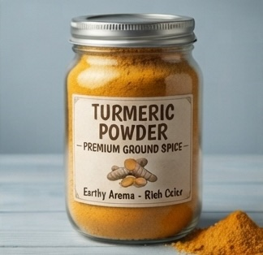
Vibrant golden spice ground from dried turmeric rhizomes, valued for its warm, earthy flavor, bright color, and curcumin content. Essential for curries, lentils, soups, and golden milk.
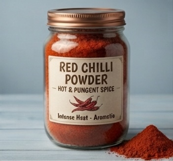
Finely milled dried red chillies delivering bold heat, smoky-fuity depth, and rich red color. Ideal for tempering, marinades, curries, and spicy sauces.
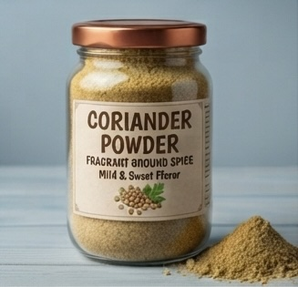
Light, citrusy, and subtly floral powder ground from roasted or raw coriander seeds. Great for thickening gravies, balancing bold masalas, and seasoning roasted vegetables.
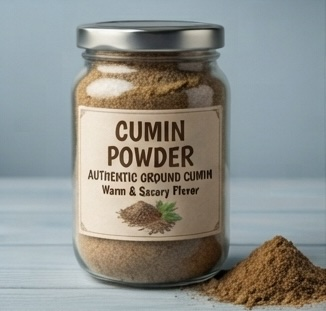
Warm, nutty, and earthy spice milled from cumin seeds with unmistakeable savory aroma. A staple for spice blends, bean dishes, roasted meats, and flatbreads.